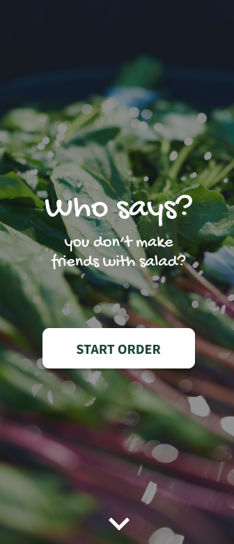
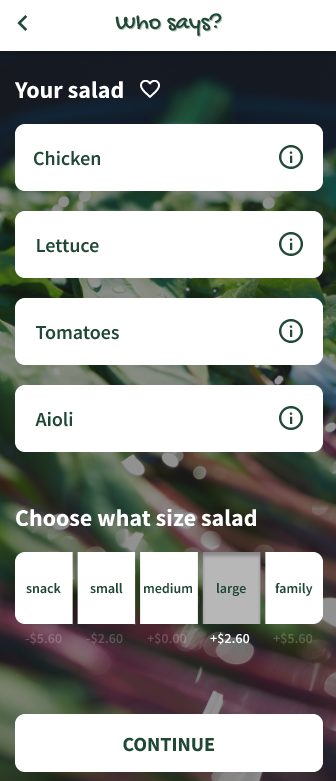
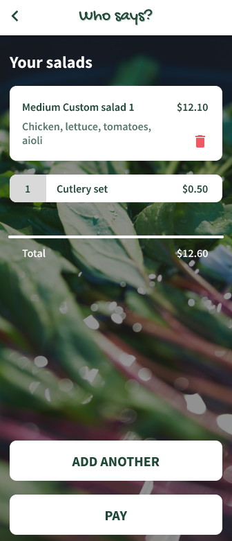

Role: UI/UX designer
Tools: Figma
Try it out: Who says?
Summary of Project
This project is an interactive prototype used for customising and ordering a salad through a mobile app. The prototype is developed and tested with Figma, with the user experience and user interface designed to work for a range of personas.



Objective
Our task was to design the user experience and user interface of a mobile application for customers of the healthy-fast-food business called Who says? who want to order a salad online.
With the help of the eight detailed personas provided, an app was created that allows many different people with various nutritional and dietary requirements and preferences to customise their own salad and their experience with the app.